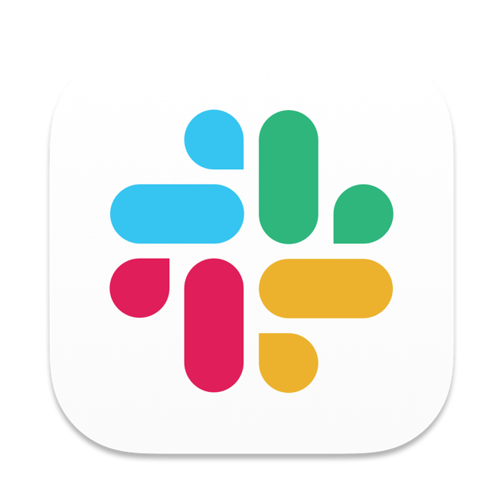
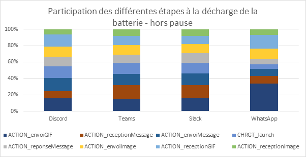
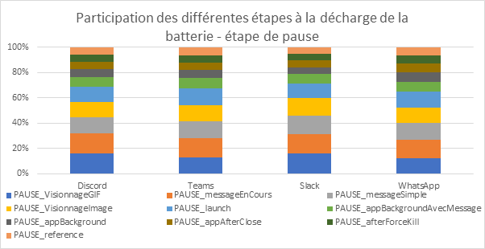
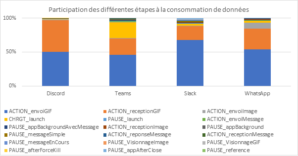
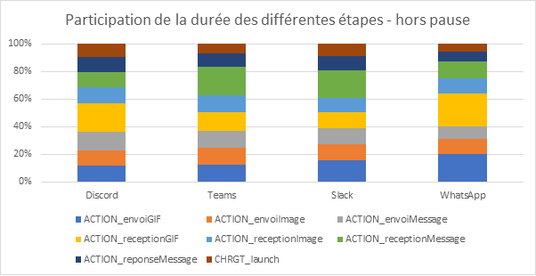

Introduction
L’avènement des messageries instantanées a transformé les methodes de communications dans le monde professionnel. Dans un monde où la rapidité est cruciale, ces applications offrent une plateforme d’échange, de coordination et de prise de décision en temps réel. Des applications tels que Microsoft Teams, Slack, WhatsApp, Discord ou bien d’autres ont ainsi changé la manière dont les équipes intéragissent, en enlevant les limitations géographiques et en facilitant la communication. Les messageries instantanées ont également joué un rôle crucial dans l’évolution du travail à distance, en fournissant une connectivité continue entre les collaborateurs. Cependant, derrière cette facilité d’utilisation et cette rapidité se cache un aspect souvent négligé : l’impact environnemental de ces applications.
Discord

Slack
Teams
Ces applications sont d’autant plus impactantes qu’elles sont largement diffusées dans les entreprises mais aussi sur des moments de consommations longs et fréquents. Voilà pourquoi, il est intéressant de connaître l‘impact unitaire de ces usages et de pouvoir projeter des impacts plus globaux.
Méthodologie
Définition du parcours utilisateur
Pour la mesure, nous avons déterminé un scénario compatible sur toutes les applications :
- Etape 0 : pause de 30s de référence (avec aucune application d’ouverte)
- Etape 1 : ouverture de l’application
- Etape 2 : pause de 30s avec l’application ouverte
- Etape 3 : envoi d’un message
- Etape 4 : pause de 30s pour la lecture du message
- Etape 5 : réception d’une réponse
- Etape 6 : envoi d’une réponse
- Etape 7 : pause de 30s sur la conversation alors que l’autre écrit le message
- Etape 8 : envoi d’une image (60,54 ko)
- Etape 9 : pause de 30s pour le visionnage de l’image
- Etape 10 : réception d’une image (6,50 ko)
- Etape 11 : envoi d’un fichier .gif (3,36 Mo)
- Etape 12 : pause de 30s pour le visionnage du fichier .gif
- Etape 13 : réception d’un fichier .gif (3,36 Mo)
- Etape 14 : pause de 30s avec l’application en arrière-plan
- Etape 15 : pause de 30s avec l’application en arrière-plan avec la réception de message
- Etape 16 : pause de 30s après fermeture de l’application par l’utilisateur
- Etape 17 : pause de 30s après fermeture forcée de l’application
Afin de pouvoir aussi comparer les performances entre les différentes applications, deux smartphones ont été utilisés, afin d’envoyer les réponses automatiquement après réception.
Lors de cette évaluation, nous avons pris le parti d’utiliser des comptes vierges pour chaque application afin que le poids des conversations précédentes n’interfère pas avec nos résultats.
Contexte de mesure
- Samsung Galaxy S10, Android 12
- Réseau : Wi-Fi
- Luminosité : 50%
- Tests réalisés sur minimum 3 itérations pour fiabiliser les résultats
Contexte de mesure
- Samsung Galaxy S10, Android 12
- Réseau : Wi-Fi
- Luminosité : 50%
- Tests réalisés sur minimum 3 itérations pour fiabiliser les résultats
Les applications
OS requis
Afin de pouvoir continuer à utiliser l’application à son plein potentiel en toute sécurité, il est important d’avoir une application à jour. Ainsi, en 2020, selon l’Eurobaromètre de la Commission européenne 19% des motifs de renouvellement d’un appareil numérique sont dus à un problème logiciel. Il est donc de la responsabilité des éditeurs de supporter les OS les plus anciens.
| Version minimum d’Android requise | Pourcentage de détenteur de téléphone Android pouvant télécharger l’application (14 février 2024) | Version minimum d’iOS requise | Pourcentage de détenteur de téléphone sous iOS pouvant télécharger l’application (4 janvier 2024) | |
|---|---|---|---|---|
| Android 5.0 | 99,5 | iOS12 | 98,8 | |
| Discord | Android 7.0 | 97,1 | iOS12 | 98,8 |
| Slack | Android 10 | 84,3 | iOS15 | 94,2 |
| Teams | Android 11 | 75,4 | iOS15 | 94,2 |
Le meilleur élève est ici WhatsApp, qui supporte Android 5.0 (version qui date de 2014), iOS 12.0 (qui date de 2018) et toutes les versions ultérieures.
Le moins bon élève est Teams, qui ne supporte qu’à partir d’Android 11 (2020) et d’iOS 15.0 (2021). Ainsi, 24 utilisateurs sur 100 ayant un smartphone Android ne peuvent pas utiliser cette application.
La taille des applications
Une application légère est une application qui va se concentrer sur les fonctionnalités les plus utiles, et d’aller au contraire des obésiciels, qui vont proposer des fonctionnalités inutilisables et/ou inutilisées. Cela remplit aussi la mémoire du smartphone, ce qui peut pousser certains utilisateurs à changer leur terminal.
| Discord | Slack | Teams | ||
|---|---|---|---|---|
| Taille de l’application installée (Mo) | 108 | 165 | 189 | 226 |
C’est encore une fois WhatsApp qui est le meilleur élève, et Teams, le moins bon, prend plus du double en termes de place.
Impact environnemental
À la suite d’une analyse détaillée, nous avons pu mettre en évidence les applications ayant l’empreinte environnementale la plus grande pour ce parcours.
Hypothèses retenues pour l’évaluation environnementale
- Localisation des utilisateurs : 100% en France ou 100% monde
- Localisation des serveurs : 100% monde
- Appareils utilisés : smartphones uniquement
| Application | Impact du parcours (gCO2e) pour des utilisateurs en France | Impact du parcours (gCO2e) pour des utilisateurs hors France |
|---|---|---|
| 3,6 | 3,7 | |
| Discord | 4,5 | 4,6 |
| Teams | 4,6 | 4,8 |
| Slack | 5,2 | 5,4 |
| Application | Eau consommée (l)* | Occupation des sols (cm2)* |
|---|---|---|
| 0,5 | 6,2 | |
| Discord | 0,6 | 5 |
| Teams | 0,6 | 6,2 |
| Slack | 0,7 | 7,8 |
L’application la plus sobre
C’est WhatsApp qui propose l’impact environnemental le plus faible sur ce parcours. Cela s’explique principalement par une très faible consommation de données.
L’application la moins sobre
C’est Slack qui propose l’impact environnemental le plus élevé sur ce parcours. Cela s’explique par une forte consommation énergétique.
Analyse des mesures
Axe consommation d’énergie
Afin de préserver la durée de vie de la batterie, il est impératif que l’application soit optimisée pour une consommation d’énergie minimale, le nombre de cycles de charge/décharge du téléphone jouant un rôle crucial dans le processus de dégradation de la batterie.
| Teams | Discord | Slack | ||
|---|---|---|---|---|
| Impact énergétique du parcours (mAh) | 11,1 | 10,6 | 11 | 16 |
L’application la plus sobre
Teams propose la consommation d’énergie la plus faible sur ce parcours.
L’application la moins sobre
Slack propose la plus forte consommation énergétique sur ce parcours.

On observe sur ce graphique que pour WhatsApp, l’action d’envoyer un gif semble plus impactant que pour les autres applications.

Quid du mode sombre
Aujourd’hui les applications proposent un mode sombre. Celui-ci présente plusieurs avantages, parmi lesquels figure l’économie d’énergie de l’écran sur les appareils à écran OLED, a l’instar de celui de Samsung Galaxy sur lequel les tests ont été effectué. Discord propose deux options, avec un mode sombre et un mode Midnight.
| WhatsApp Dark | Teams Dark | Discord Dark | Discord Midnight | Slack Dark | |
|---|---|---|---|---|---|
| Impact énergétique du parcours (mAh) | 7,8 | 7,6 | 7,3 | 7,2 | 12,7 |
| Réduction par rapport au light mode | -30% | -28% | -34% | -35% | -21% |
Ainsi toutes les applications voient leurs consommations d’énergie diminuer, entre 21 et 35%.
Axe consommation de données mobiles
| Teams | Discord | Slack | ||
|---|---|---|---|---|
| Consommation de données mobiles du parcours (Mo) | 0,8 | 7,8 | 7,3 | 7,5 |
L’application la plus sobre
WhatsApp propose la consommation de données la plus faible sur ce parcours. Cela s’explique par une compression par défaut des éléments envoyés.
L’application la moins sobre
Teams propose la plus forte consommation de données sur ce parcours. On remarque une surconsommation de données par rapport aux autres lors de l’étape d’ouverture de l’application.

Axe performance d’usage
La performance permet de répondre à un besoin en mobilisant moins longtemps un terminal et donc d’avoir moins de quote-part de fabrication, ce qui génère au final un impact plus faible.
| Teams | Discord | Slack | ||
|---|---|---|---|---|
| Durée du parcours (en s, hors pause) | 55,6 | 37,4 | 42,5 | 49,9 |
L’application la plus sobre
Teams propose la durée la plus faible sur ce parcours.
L’application la moins sobre
WhatsApp propose la durée la plus forte sur ce parcours. Quand on observe la durée des différentes étapes, on remarque que les étapes les plus longues pour WhatsApp sont l’envoi et la réception de GIF.

Conclusion
Parmi le panel des solutions mesurées, c’est l’utilisation de WhatsApp qui permettra de limiter le plus les émissions de CO2eq sur ce scénario, notamment grâce à la compression des images et des fichiers GIF. Cette analyse démontre aussi le coût de cette compression, tant au point de vue énergétique et au point de vue des performances, mais que le ratio coût bénéfice est quand même en faveur de cette compression. L’application la plus impactante, Slack émettra 44% de plus que WhatsApp. Finalement, l’utilisation du mode sombre permet de diminuer l’impact énergétique sur les téléphones équipés d’un écran OLED, entre 20 et 35%.
Source :
https://europa.eu/eurobarometer/api/deliverable/download/file?deliverableId=72255